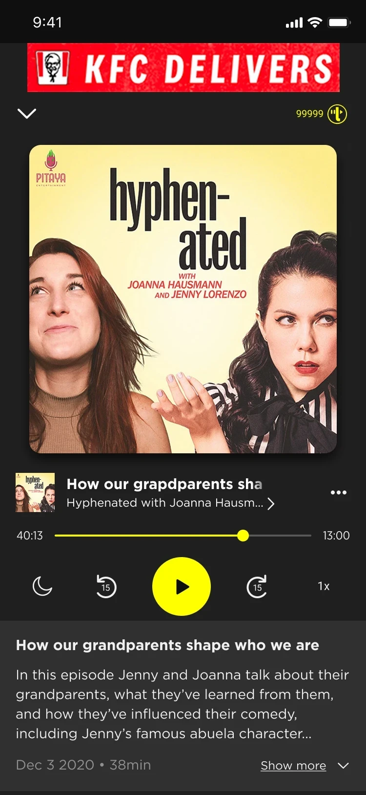

01 · Podcast introduction
Podcast integration
Podcasts were integrated into the existing app structure: shows appear between the music rows on the home screen, each one opens its own show page, and a new Podcasts section in the Library brings everything together in one place.
